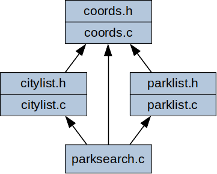
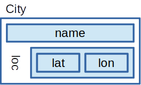
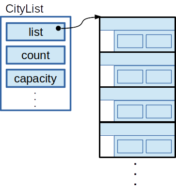
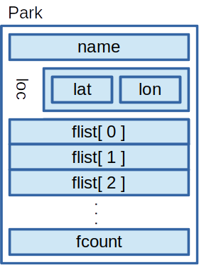
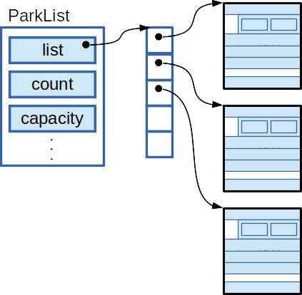

For this homework assignment, we’ll be developing a program that lets
users search for state parks or other locations of interest in North
Carolina. It’s called parksearch. The following shows how a
user might interact with the program. The text that’s in bold shows what
the user types. The rest is output from the program.
When we run the program, we use command-line arguments to give it the
names of files containing lists of cities and parks. The two files shown
here are examples given with the starter. The cities-c.txt
file contains a list of 10 cities in North Carolina, and
parks-c.txt contains information about 10 state parks and
recreation areas.
After starting, the program prompts the user for a query. First, the user asks for a list of all the cities. The program echos the user query then prints out a list of the cities read at program start-up, each with latitude and longitude.
$ ./parksearch cities-c.txt parks-c.txt cmd> cities cities Burlington 36.096 -79.437 Charlotte 35.227 -80.843 Durham 35.994 -78.899 Fayetteville 35.053 -78.878 Greensboro 36.073 -79.792 Greenville 35.613 -77.366 Huntersville 35.411 -80.843 Kannapolis 35.487 -80.622 Raleigh 35.772 -78.639 RockyMount 35.938 -77.790 cmd> parks parks Chimney Rock State Park Dismal Swamp State Park Eno River State Park Falls Lake State Recreation Area Grandfather Mountain State Park Hanging Rock State Park Jockey's Ridge State Park Jordan Lake State Recreation Area Kerr Lake State Recreation Area Pilot Mountain State Park cmd> parks show features limit 5 parks show features limit 5 Chimney Rock State Park biking birdwatching fishing hiking picnicking rock-climbing Dismal Swamp State Park biking birdwatching fishing hiking paddling picnicking Eno River State Park birdwatching camping fishing paddling picnicking Falls Lake State Recreation Area biking birdwatching boating camping fishing hiking paddling picnicking swimming Grandfather Mountain State Park birdwatching camping hiking cmd> parks with swimming show location parks with swimming show location Falls Lake State Recreation Area 36.012 -78.689 Hanging Rock State Park 36.412 -80.254 Jockey's Ridge State Park 35.964 -75.633 Jordan Lake State Recreation Area 35.737 -79.017 Kerr Lake State Recreation Area 36.441 -78.369 cmd> parks near Raleigh with camping show distance parks near Raleigh with camping show distance Falls Lake State Recreation Area 16.79 Jordan Lake State Recreation Area 21.33 Eno River State Park 29.45 Kerr Lake State Recreation Area 48.63 Hanging Rock State Park 100.43 Pilot Mountain State Park 109.21 Grandfather Mountain State Park 179.06 cmd> parks with camping show distance near Raleigh parks with camping show distance near Raleigh Falls Lake State Recreation Area 16.79 Jordan Lake State Recreation Area 21.33 Eno River State Park 29.45 Kerr Lake State Recreation Area 48.63 Hanging Rock State Park 100.43 Pilot Mountain State Park 109.21 Grandfather Mountain State Park 179.06 cmd>
Next, the user asks for a list of the parks, and the program responds
with a list of all the parks it read in at start-up. The
parks query supports a number of options the user can give
in order to select particular parks or display information they’re
interested in. After listing all the parks, the user asks for a list of
at most 5 parks, each one with a list of park features. Then, the user
asks for a list of parks that have swimming among their features,
reporting each one with its GPS coordinates.
Finally, the user user requests a list of parks that have camping, sorted by their distance to Raleigh each reported with their distance to Raleigh. The user enters this last query twice, with the options given in a different order. At the end, the user signals the end-of-file on standard input by pressing ctrl-d. This causes the program to terminate.
As with the previous homework assignments, you’ll be developing this
one using git for revision control. You should be able to just unpack
the starter into the hw4 directory of your cloned repo to
get started. See the Getting Started section for
instructions.
This homework assignment supports a number of our course objectives. See the Learning Outcomes section for a list.
You must complete this homework assignment individually. All code submitted for this assignment must be from the starter or written by you for this course. You are not permitted to use code that has been generated or obtained from sources other than course materials (class slides, the textbook, posted class examples), even if you modify this code before turning it in. If your editor is configured to write code for you (maybe using generative AI), you will need to disable these feature while working on this assignment. If you’re unsure what’s permitted, you can have a look at the academic integrity guidelines in the course syllabus.
You must complete this assignment using material covered in the
lecture slides up to lecture 16. In particular, you’ll need the material
in lecture 10 to know how to use sscanf() and the material
in lecture 16 to know how to use valgrind to detect memory leaks. Please
don’t go find other resources for implementing your solution. This will
help you to practice using the C language and library features we’ve
covered up to this point in the class.
In the design section, you’ll see some instructions for how your implementation is expected to work. Be sure you follow these rules. It’s not enough to just turn in a working program; your program has to follow the design constraints we’ve asked you to follow. For this assignment, we’re putting some constraints on the functions you’ll need to define, the data structures you’ll use and how you’re going to organize your code into components. Still, you will have lots of opportunities to design parts of your solution and to create additional functions to simplify your implementation.
This section says what your program is supposed to be able to do, and what it should do when something goes wrong. The functional requirements for the program (FR-1, FR-2, …) are accompanied by more detailed specifications for exactly what the program’s input and output should be like and how it should behave for valid and invalid input. These details will help you to implement your program so it behaves exactly like we’re expecting. This will be important in grading your work.
During execution, the parksearch program maintains a
city list and a park list. The city list is a list of
cities, each with a name and global coordinates stored as latitude and
longitude. For each park, the park list stores a name, global
coordinates and a list of features for the park. These lists are used to
let the user select parks that offer the features they’re interested
in.
FR-1 : The city list and park list can be populated based on city files and park files read at program start-up.
The parksearch program expects two types of filenames on
the command line, city files and park files. The name of a city file
must start with the string “cities-”. These files contain a list of
cities in a format described below. The name of a park file must start
with the string “parks-”; these files contains lists of parks. The
program can be run with any number of park and city files given on the
command line. It can even be run with no filenames, but then the city
and park lists will be empty.
If the program is run with invalid command-line arguments, it should print a line with the following usage message to standard error and terminate with an exit status of EXIT_FAILURE.
usage: parksearch [ parks-file.txt | cities-file.txt ]*If the program can’t open one of the given files for reading, it should print the following message to standard error and exit with a status of EXIT_FAILURE. Here, filename is the name of the file given on the command line. The program should report the first filename on the command line that it can’t successfully open (i.e., if there are multiple filenames on the command line that can’t be opened, it just needs to report this error for the first one that can’t be opened).
Can't open file: filenameLike the example below, a city file consists of a sequence of zero or more records, each one describing a city. Each record has three fields, separated by whitespace. The first is a city name of 1 to 20 non-whitespace characters. This is followed by two floating-point values giving the latitude and longitude of the city.
Apex 35.7327 -78.8503
ChapelHill 35.9132 -79.0558
Hendersonville
35.3187
-82.4609
HighPoint 35.956 -80.005
Wilmington 34.236 -77.946A city file is invalid if:
If a city file is invalid, the program should print a line with the following message to standard error and terminate with a status of EXIT_FAILURE. Here, filename is the name of the file containing the bad city description.
Invalid city file: filenameThe parksearch program can be run with multiple city
files. If there is a duplicate city name across all the city input
files, the program should print a line with the following error message
to standard error (where city is the name of the duplicate
city) and terminate with an exit status of EXIT_FAILURE. If there are
multiple duplicate cities, you can report this message for any one of
them (whichever one your program detects first).
Duplicate city name: cityLike the example shown below, a park file contains zero or more records for parks. Each park record starts with a name of 1 to 40 characters. The name may include spaces, so an entire input line is used for the name; it extends from the start of the line up to the last character before the newline.
The park name is followed by GPS coordinates, given as floating point values for latitude and longitude. This is followed by an integer, n and then n strings giving features of the park. Each park can have between zero and 10 features and each feature is a string of 1 to 15 non-whitespace characters.
Other than the park name, fields describing the park can be separated by any amount of whitespace. The first line of a park file must be the name of the first park, and the name of each subsequent park must start on the next line after the last feature of the previous park, or after the number of features, n, if the previous park has zero features.
Hanging Rock State Park
36.411906 -80.254122 2 biking camping
Kerr Lake State Recreation Area
36.4411 -78.3688
4 birdwatching fishing hiking paddling
Pilot Mountain State Park
36.341276 -80.462938
3
horse-riding
picnicking
rock-climbing
Grandfather Mountain State Park
36.11139 -81.8125 3 birdwatching camping hikingA park file is invalid if:
If a park file is invalid, the program should print a line with the following message to standard error and terminate with a status of EXIT_FAILURE. Here, filename is the name of the file containing the bad park description.
Invalid park file: filenameThe parksearch program can be run with multiple park
files. If there is a duplicate park name across all the park input
files, the program should print a line with the following error message
to standard error (where park is the name of the duplicate
park) and terminate with an exit status of EXIT_FAILURE. If there are
multiple duplicate parks, you can report this message for any one of
them (whichever one your program detects first).
Duplicate park name: parkFR-2 : The user can enter queries to see the contents of the city list or the park list.
After the parksearch program starts, the user will be
able to enter queries to see a list of cities or to search through the
park list. Before each query, the program will prompt the user with the
following string. This string has one space at the end, right after the
> character.
cmd> After the user enters a query, the program will echo it back to the user. This just means that the program will print a copy of the query the user just entered before printing the response to the query. Echoing a copy of the query like this will help when we’re capturing program output in a file. It gives us a way to capture a copy of each user query, right before the program’s response to the query.
If the user enters an empty line, the program will echo it (a blank line) then prompt again for another user input. Input lines that consist of only whitespace aren’t considered errors; they’re just ignored by the program.
All queries start with the word cities or
parks. The parks query can be followed by additional
options to let the user select particular parks or report different
information about the selected parks. There can be additional whitespace
at the start or end of the user input or between the options for a
parks query.
User queries can be up to 100 characters long. If an input line is longer than 100 characters, the program will read and discard any additional characters on the line after the first 100. It will echo the first 100 characters of the input line, followed by the string ‘…’ to indicate that there was additional input that was discarded. A line longer than 100 characters is considered an invalid command, so an interaction with the program could look like:
cmd> This is a long query. The program won't even get a chance to parse it since it won't store the whole input line.
This is a long query. The program won't even get a chance to parse it since it won't store the whol...
Invalid commandFR-2.1 : The user can enter a cities
query to get a report of all the cities on the city list.
If the user enters cities, the program should print a
report of all the cities in the format shown below. Cities should be
sorted lexicographically by their names. Each line of output should give
the city name, left-justified in a 20-character field. This should be
followed by a space, then the city latitude right justified in an
8-character field. This should be followed by another space and then the
city longitude right justified in an 8-character field. The latitude and
longitude values should be rounded to three fractional digits.
Apex 35.733 -78.850 ChapelHill 35.913 -79.056 Hendersonville 35.319 -82.461 HighPoint 35.956 -80.005 Wilmington 34.236 -77.946
If the city list is empty, the program should print a line with the following message to standard output and then prompt for another command.
City list emptyFR-2.2 : The user can enter a parks
query to get a report of parks on the park list.
If the user enters parks, the program should print a
report of parks in the park list. The basic parks report is
just a list of park names, sorted lexicographically by name. Each park
name should be printed left-justified in a 40-character field. This
means that there will typically be some spaces at the end of each output
line, so every output line is exactly 40 characters in length. The
spaces at the end of each line will help with options that report
additional information about each park. Extra output columns added to
the right will still line up.
Grandfather Mountain State Park
Hanging Rock State Park
Kerr Lake State Recreation Area
Pilot Mountain State Park The parks query can be followed by several optional
parameters, each one consisting of two values. Optional parameters can
be given in any order after the word parks.
FR-2.3 : The output for a parks query
can be limited to a user-specified number of parks.
The parks query can be followed by the word,
limit, and then a positive integer, m. This limits
the number of parks printed to just the first m. For example,
the following query would report at most 5 parks. If there are fewer
than 5 parks on the park list or if other parameters are used to select
parks, it could print fewer than 5.
cmd> parks limit 5The input is considered invalid if the value after the word,
limit can’t be parsed as a positive integer.
FR-2.4 : The output for a parks query
can be specialized to report only parks with a user-selected
feature.
The parks query can be followed by the word,
with, and then a string of 1 to 15 non-whitespace
characters, f. This causes the query to report only those parks
that have the feature, f, in their feature list. To match, the
park must have a feature that matches the given string exactly,
including capitalization. For example, the following would list only
those parks that had “swimming” on their feature list.
cmd> parks with swimmingThe with option is considered invalid if it isn’t
followed by a word, or if the word is longer than 15 characters. It’s
not considered an error if the user asks for a feature that’s not
available at any park.
FR-2.5 : The output for a parks query
can be ordered by distance to a city.
The parks query can be followed by the word,
near, and then the name of a city, c, from the
city list. If this option is provided, the parks in the output will be
ordered by their distance to the given city. Parks that tie for distance
(unlikely) should be ordered by name. Distance will be approximated
based on the global coordinates of the park and city and 3958.8 as the
approximate radius of the earth, in Miles. For example, the following
query will order cities based on their distance to Raleigh.
cmd> parks near RaleighThe near option is considered invalid if it isn’t
followed by a word, or if the word isn’t the name of a city on the city
list. The given name must match the name of a city on the city list
exactly, including capitalization.
FR-2.6 : The output for a parks query
can be configured to include global coordinates of each park, the list
of features for each park or the distance to a selected city when the
near option is used.
The parks query can be followed by the word,
show and then either the the word location,
features or distance. If
show location is specified, then each park name in the
listing will be followed by global coordinates for that park. Global
coordinates will be added to each line as a space, then the latitude of
the park, right aligned in an 8-column field, then another space then
the longitude in an 8-column field. Latitude and longitude values will
be rounded to three fractional digits of precision. With this option,
output of a parks query could look like:
Grandfather Mountain State Park 36.111 -81.812
Hanging Rock State Park 36.412 -80.254
Kerr Lake State Recreation Area 36.441 -78.369
Pilot Mountain State Park 36.341 -80.463If show features is specified, then each park name in
the listing will be followed by the list of features for that park.
Features for each park will be listed in the same order they occurred in
the parks input file. Features will be separated by a single space, with
a space at the start to separate them from the park name. With this
option, output of a parks query could look like:
Grandfather Mountain State Park birdwatching camping hiking
Hanging Rock State Park biking camping
Kerr Lake State Recreation Area birdwatching fishing hiking paddling
Pilot Mountain State Park horse-riding picnicking rock-climbingThe show distance option requires that the
near c option be included elsewhere in the query.
With this option, the parks report will include the distance of each
park to the given city, c. The distance report will start with
a space, then the distance to the city (in miles), right aligned in an
8-column field rounded to two fractional digits. With the
show distance option, output of a parks query
might look like:
parks near HighPoint show distance
Hanging Rock State Park 34.43
Pilot Mountain State Park 36.90
Kerr Lake State Recreation Area 97.19
Grandfather Mountain State Park 101.56The show option is invalid if it isn’t followed by
location, features or distance.
The show distance option is only valid if a
near option is given in elsewhere in the query (either
before or after the show option).
FR-3 : For invalid user inputs, the program will print an “Invalid command” message, ignore the command and prompt the user for another command.
A query is considered invalid if:
cities or parkscities keyword is followed by non-whitespace
characters.parks keyword is followed by something that doesn’t
match one of the valid options described above.parks
query. For example, a query can’t give the limit option more than once,
even if it has the same limit value, m. If you do the
extra credit described below, you can permit more than
one with option and more than one show
option.If the user enters an invalid command, the program will echo the command (or the first 100 characters of it if it’s too long), then print a line saying “Invalid command” to standard output. Then, the program will prompt the user for another input.
FR-4 : The program should terminate when it reaches the end-of-file on standard input.
After the user is done entering queries, they can type ctrl-d to signal the end-of-file on standard input. If the program is reading input redirected from a file, it will just terminate when it reaches the end-of-file.
This assignment includes a couple of additional requirements that you can implement for extra credit. Implementing each of these extra credit features is worth five extra credit points. If you implement both of them, that’s worth 10 points of extra credit.
FR-2.7 : A parks query may include
multiple with options. If more than one with
options is given, then the output should list parks that have all of the
requested features.
If you implement FR-2.7, then your
parksearch program will be able to search for parks that
have a set of features, not just a single, selected feature. Although
this requirements permits multiple with options, a query
with multiple with options for the same feature would still
be considered invalid.
FR-2.8 : A parks query may include
multiple show options.
If you implement FR-2.8, then your
parksearch program can report multiple, optional output
fields. Each of the show options can be given in the query, and the
output will include the optional output fields in the same order they
are specified in the query. Each of the optional output fields can be
given at most once, and show distance can only be given if
the query also includes a near option.
Feature lists for each park may be different lengths; some parks may
have more features or longer names for their features. So, for
FR-2.8, if show features is given before
show distance or show location, then the
output for park location and distance probably won’t line up as a
column. That’s OK. You’re not expected to make the output for
show features take the same amount of space for all
parks.
The following sections describe how your program should work and some of the functions you will need to implement and use.
Your implementation will be organized into four components. The
coords component defines a structure for representing
global coordinates and computing approximate distance between two
locations on the surface of the earth. The parklist and
citylist components will contain code for parsing, storing
and managing the park list and city list. The parksearch
component is the top-level component, containing main() and
code to parse and execute user queries.
The following figure shows the organization of these components. The
parksearch component uses code from the other three
components. The citylist and parklist
components don’t directly interact with each other, but they both use
the coords component help store city and park locations and
to compute distances.

Since the coords, parklist, and
citylist components provide functions that are used
elsewhere in the program, they will each have a header file that
prototypes these functions. These headers will also define types (e.g.,
structs) used elsewhere in the program. The top-level component won’t
need a header, since there aren’t any other components that use the
functions it defines.
This assignment depends on using typedef to map
structure names to short type names. For example, typedef
is used to map the structure for a park to the type name,
Park. This lets us use shorter type names, without having
to give the struct keyword over and over when we’re talking
about these types.
The starter for this assignment includes a complete implementation of
the coords component. It defines a struct,
Coords, for representing global coordinates as latitude and
longitude, and it provides a function, globalDistance() for
computing the approximate distance between any two locations on the
surface of the earth.
This assignment is a good chance to get some experience using
structs, dynamic memory allocation and resizable arrays. Each city will
be represented by a struct, City, with a character array
for its name and an instance of the Coords struct for its
global coordinates.

The city list will be implemented as an instance of the
CityList struct. It will contain fields for implementing a
resizable array of City instances. The list
field is a pointer to a dynamically allocated array of City
instances, capacity records the size of the array, and
count is the number of cities currently stored in the
array. When a CityList is first created, it will allocate
an array of City structs with a a capacity of 5. As cities
are read from the input, it may need to enlarge this array, doubling its
size whenever it runs out of space.

You can add more fields to the City and
CityList structs, but don’t change or remove the existing
fields. The unit test program depends on these fields for some of its
tests.
Each park will be represented by an instance of the Park
struct. It contains an array of characters for storing the park name, an
instance of Coords for storing the park location, a 2D
array, flist, for storing the list of park features and an
integer fcount the number of features the park has.

The park list will be represented with a dynamically allocated
instance of the ParkList struct. It will contain fields for
implementing a resizable array of pointers to Park
instances. Notice that this is different from the CityList. Here, the
array is an array of pointers, with the Park instances
stored elsewhere in memory. With the City list, the array
contained all the City instances, so no additional heap
memory was needed to store each city. Here, you’ll need to allocate
space for the array of pointers, then another block of memory for each
City instance one of these pointers points to. Your
resizable array of pointers should start with an initial capacity of 5,
and it should double in capacity whenever the array needs to be
enlarged.

You can add more fields to the Park and
ParkList structs, but don’t change or remove the existing
fields provided with the starter. The unit test program uses some of
these fields to help test your code.
As part of your implementation, you will define and use the following functions. You can define more if you want to. Just try to put them in a component that’s suitable for whatever they do and remember to mark them as static where you can. A function that’s intended to be used by other components should be non-static, and it should have a prototype and a block comment in the header file for that component. A function that’s for internal use by just one component should be defined and marked static in that component; its block comment should be right before the definition of the function.
Your citylist component should have the following five
functions.
CityList *makeCityList()
This function dynamically allocates storage for the CityList,
initializes its fields and returns a pointer to the new CityList. It’s
kind of like a constructor in Java.
void freeCityList( CityList *cityList )
This function frees the memory used to store the given CityList,
including the array of City structs and the
CityList itself.
void readCities( CityList *cityList, char const *filename )
This function reads all the cities from a city file with the given
filename. For each city, it fills in one of the City
structs in the list array, growing it as needed.
void listCities( CityList *cityList, FILE *fp )
This function prints all the cities in the format described above,
sending output to the given file. Of course, the caller can provide
stdin as the file pointer to get this function to print to the
terminal.
bool locateCity( CityList *cityList, char const *name, Coords *loc )
This function looks for a city with the given name in the city list. If
the city is found, it returns true and puts the city’s global
coordinates in the given Coords struct. If the city can’t be found, the
function returns false.
Your parklist component should have the following five
functions.
ParkList *makeParkList()
This function dynamically allocates storage for the ParkList,
initializes its fields for a resizable array of pointers to Park
instances and returns a pointer to the new ParkList. It’s like a
constructor in Java.
void freeParkList( ParkList *parkList)
This function frees the memory used to store the given
ParkList, including freeing space for all the
Park instances, freeing the array of pointers to Parks and
freeing space for the ParkList struct itself.
void readParks( ParkList *parkList, char const *filename )
This function reads all the parks from a park file with the given
filename. For each park in the input, it allocates an instance the
Park struct and stores a pointer to it in the resizable
array, growing the array when needed.
void sortParks( ParkList *parkList, int (*comparator)(void const *, void const * ) )
This function sorts the parks in the given parkList. It uses the
qsort() function together with the function pointer
parameter to order the parks. The function pointer is described in the
“Sorting Parks and Cities” section below.
void listParks( ParkList *parkList, FILE *fp, bool (*selector)( Park * ), void (*customizer)( Park *, FILE * ), int limit )
This function prints parks from the park list. The limit
parameter lets the caller specify a limit on the number of parks that
should be printed. The limit parameter should be a
non-negative value indicating the maximum number of parks to report. If
limit is zero, the function should print arbitrarily many
parks. The selector and customizer functions
are for choosing what parks to print and for adding additional output to
the report for each park. These are described in more detail below in
the “Selecting Parks” and “Customizing Park Output” sections.
Your top-level, parksearch.c file will contain the
main() function. You’ll also implement and use the
following two functions to help organize and simplify your solution:
static int getLine( char line[], int limit )
This function is for reading lines of user input from the terminal. It
stores the text of each line in the line array. The
limit parameter tell the function the length of the
line array, so it won’t buffer overflow. The function will
always read a whole line of text, but it will have to discard characters
if the input line is too long. The function should return EOF is there
are no more lines to be read from standard input. It should return 1
(true) if the next line is read successfully, and it should return 0
(false) if the input line was too long and some of it had to be
discarded. Use this function to read input from the user. Reading a
whole input line at once will make it easy to parse the command in the
handleCommand() function below, or to discard the whole
line if it’s invalid.
static bool handleCommand( char const *cmd )
This function is for parsing and responding to a user query, stored in
the cmd string. You can use functions like sscanf() to
parse parts of the command and then call functions in the
citylist or parklist components to perform the
requested action. The function should return true or false to indicate
whether the given command is valid.
In general, you should avoid using global variables in your program. It makes it more difficult to reuse code and it can create conflicts in the global namespace.
In the starter code, the top-level parksearch.c
component uses two static global variables to keep up with the park list
and city list. It’ OK for you to use these two variables. You will also
need to use some additional global variables to implement the
near and with options. It’s OK to use global
variables to support these features, but you shouldn’t need globals for
other parts of the program.
With help from the getLine() function, it will be easy
to read user input one line at a time. After reading a line of input,
you can use sscanf() to parse the type of query and query
options.
Remember, unlike reading from a file, sscanf() doesn’t
automatically resume parsing from where it left off on the last call.
For example, you couldn’t call something like
sscanf( str, "%d", &x ); to read an int then call
sscanf( str, "%d", &y ); again to read the next int. If
you gave sscanf() the same string in two successive calls,
it would just start parsing at the start of the string each time. If you
want to parse multiple values out of the same string, you can do it all
at once, like sscanf( str, "%d%d", &x, &y );, or
you could advance the pointer on successive calls to
sscanf(), as in
sscanf( str + offset, "%d", &y );. We talked about this
near the middle of lecture 11.
Cities in the input could be in an arbitrary order, but your program
will need to report them in sorted order in response to a
cities query. You should use the standard library
qsort() to perform the sorting for you, but you’ll need to
give it a pointer comparator function to get it to order the cities by
name. Remember that you give qsort() a pointer to the start
of the array you want to sort, it computes the addresses of elements of
the array and passes those to your comparator function as void pointers.
For the CityList, the array contains instances of City, so
you will want to convert these void pointers to pointers to
City, so you can get access to the cities fields.
For sorting parks, the sortParks() lets client code
order the park list using any comparison function that’s needed. Use
this to get the list of parks the right order before printing it with
listParks(). The array inside ParkList is an array of
pointers to Park instances, so a pointer to an array
element will be a pointer to a pointer to a Park. When
qsort() calls the comparator function, it will provide two
pointers to array elements as void pointers. You will need to convert
these to pointers to pointers to Park in order to get to
the fields of a park for that element.
For sorting parks, you’ll need two comparator functions, one that
orders parks by name and one that orders by distance. For the latter,
you will need some way for the comparator to know the location of the
reference city given with the near command. You can use a
static global variable for this. Inside the comparator function, you can
check the distance between the reference city and each of the given
parks and return a value to indicate how the two parks compare. For
example, if the first parameter to the comparator is closer to the city,
your comparator should return a negative value.
The listParks() function expects a pointer to a
selector function. Use this to decide which parks to print.
Given a pointer to a Park, this function returns true if
that park should be printed. If you want to print every park, you can
pass in a pointer to a function that always returns true. If you want to
print just those parks with a particular feature, you can pass in a
pointer to a function that looks for a specified feature on each park’s
flist. Inside the selector function, you’ll need to know
what feature to look for. You can use a static global variable for that.
If you find the with option while parsing a query, you can
save the requested feature in this global variable, then, inside your
selector function, you can check this global variable to see what
feature you should be looking for.
The show option lets the user select additional output
to report while listing parks. The customizer parameter for
listParks() is used to add additional output while writing
the parks report. After printing the name of each park,
listParks() will call this function to give it the
opportunity to add some output to the end of each line. For example, if
you want to report the location of each park, you can pass in a pointer
to a function that will print the latitude and longitude of a park. For
reporting park features, you can use a pointer to a different customizer
function. For reporting distance, you’ll need another customizer
function. To compute distance, this last customizer function can use the
same global variable used when sorting parks by distance to the
reference city.
Any functions that are needed by a different component should be prototyped and commented in the header. Functions that are intended for internal use within a component should not be prototyped in the header. A function for internal use should be commented in the implementation file, and should be marked static (given internal linkage), so it won’t be visible to any other part of the program. This is like making the function an implementation detail of its component, something we could change if we wanted without affecting other parts of the program.
The comparator, selector and customizer functions are examples of
functions that can be static. You’ll define them in the top-level,
parksearch.c. Although they are called by a different
component, they’re not actually called by name; they’re called using a
function pointer. The linker won’t be responsible for hooking up the
calls to these functions with their definitions. For the comparator,
selector and customizer functions, we’re writing code to do that
ourselves by passing function pointers to code that needs to use the
function.
Normally, printf will right-align output values in a given field width. You can use a negative value for the field width to get it to left align instead.
You get to implement your own Makefile for this assignment (called
Makefile with a capital ‘M’, no filename extension). Its
default target should build your program, compiling each source file to
an object file and then linking the objects together into an
executable.
As usual, your Makefile should correctly describe the program’s
dependencies, so targets can be rebuilt selectively, based on what
source files have changed. It should also have a clean
rule, to let the user easily delete any temporary files or target files
that can be rebuilt the next time make or the system test script is run
(e.g., the object files, the executable and any temporary output
files).
In addition to the “-Wall” and “-std=c99” options that we normally
include when we’re compiling, be sure to include the “-g” flag. This
will be useful when you try to use gdb or
valgrind to help debug the program. Since you’ll be using a
constant for PI, you’ll need to use the -D_GNU_SOURCE when
you compile a source file. You’ll also be using some functions from the
math library, so you’ll need to use the -lm flag when you
link. We had to use these same flags on exercise 15 when we were working
with some similar code.
The starter includes two source files for unit testing and an automated system test script. There are also test input files and expected outputs to help you check the correctness of your completed program. When we grade your program, we’ll test it with this script, along with a few other test inputs we’re not giving you.
The starter has a simple unit test program for the
citylist component and another one for
parklist. To build the unit test program for the
citylist, you should be able to run a command like the
following:
$ gcc -D_GNU_SOURCE -Wall -std=c99 -g citylistTest.c citylist.c coords.c -o citylistTest -lmYou can build the unit test for parklist using a similar
command:
$ gcc -D_GNU_SOURCE -Wall -std=c99 -g parklistTest.c parklist.c coords.c -o parklistTest -lmRunning these programs will try many of the functions provided by your implementation (not all of them) and make sure the results look right. At the end, each program reports the number of unit tests that were attempted and the number that passed. Using these unit tests should let you develop your program a little bit at a time. You don’t have to get the whole program written before you can check to make sure parts of your implementation are doing the right thing.
Your Makefile isn’t expected to be able to build the unit tests, but you can add rules for them if you want. Just make sure they’re not the default targets.
To run the automated system test, you should be able to enter the
following commands. The chmod command sets the script to be
executable; you probably just need to do this once for the first time
you run it, and you shouldn’t need it at all if you’re working in your
NCSU Drive space on a common platform system.
$ chmod +x stest.sh # probably just need to do this once
$ ./stest.shThis will automatically build your program (using your Makefile) and see how it does against all the test inputs.
As you develop your program, you’ll want to try it out with user input and see what it’s doing on individual test cases. Until your Makefile is working, you should be able to execute the compiler directly with the following command (although this isn’t as efficient as how your Makefile builds).
$ gcc -g -Wall -std=c99 -D_GNU_SOURCE parksearch.c parklist.c citylist.c coords.c -o parklist -lmAs it runs, the system test script reports how it’s running your program and how it’s checking the program output to see if it’s correct. To try out your program on one of the provided test cases, you can run it as follows. Here, we’re saving the program’s standard output and standard error to two different files. All of the tests have an expected output file for stdout, and some of them (the ones that exit unsuccessfully) also have an expected error output to stderr.
Here, we’re running test 08 by hand. After running the program, we check its exit status to make sure it ran successfully (it should for this test). Then we check the output file to make sure we got what was expected. This particular test shouldn’t print any output to the standard error stream, but error tests will.
$ ./parksearch cities-d.txt parks-d.txt < input-08.txt > output.txt 2> stderr.txt
$ echo $?
0
$ diff expected-08.txt output.txtOn any test that runs successfully, your program is expected to free all of the heap memory it allocates and close any files it opens. Although it’s not part of an automated test, we encourage you to try out your executable with valgrind. We certainly will when we’re grading your work. Any leaked memory, use of uninitialized memory, access to memory outside the range of an allocated block or leaked files will cost you some points. Valgrind, which is discussed in lecture 16, can help you find these errors before we do.
Your program is not expected to free memory or close all its files on error tests, those tests where your program is supposed to exit unsuccessfully. On these test cases, your program may need to exit from inside some function, where you don’t have access to all the memory you’ve allocated or all the files you’ve opened. In these cases, your program can just exit right away, without having to free all resources.
The compile instructions above include the -g flag when
building your program. This will help valgrind give more useful reports
of where it sees errors. To get valgrind to check for memory errors,
including memory leaks, you can run your program like the following.
This example runs the program on the first test case. You can use
similar commands to try your program on any test case using
valgrind.
$ valgrind --leak-check=full --show-leak-kinds=all --track-fds=yes ./parksearch cities-a.txt < input-01.txt
... lots of output ...If you want to run valgrind, you have to run it on each test case individually. You can’t run the test script inside valgrind (well, you can, but then you will be getting valgrind output for the shell, rather than for the program you wrote). Sometimes students try to run something like “valgrind test.sh”. Just be aware that this won’t work.
The tests for your program use the following city and park files. These contain various-sized files of parks, along with some invalid files for testing error handling.
cities-a.txt : This file just contains one city.
cities-b.txt : This file contains 5 cities, already sorted by name but with different amounts of spacing between the names and coordinates.
cities-c.txt : This file contains 10 cities that are not sorted by name.
cities-d.txt : This file contains 22 North Carolina cities, including all the cities from the previous city files.
cities-e.txt : This is a large test input, with 10,000 cities from all over the world.
cities-f.txt : This list has a bad value for one of the global coordinates.
cities-g.txt : This list has a city name that’s too long.
cities-h.txt : This list has two copies of the same city.
parks-a.txt : This file just contains one park, with an empty feature list.
parks-b.txt : This file contains 5 parks with empty feature lists. They’re sorted by name, but they have different amounts of space around the coordinates and the feature lists.
parks-c.txt : This file contains 10 parks that aren’t in sorted order and have non-empty feature lists.
parks-d.txt : This file contains 66 parks in North Carolina.
parks-e.txt : This is a large test input, with 20,000 randomly generated parks and randomly generated feature lists.
parks-f.txt : This file contains a park with a missing / empty name.
We’ve prepared 24 tests for your program. Using the park and city files above. They exercise the various queries and options your program is supposed to support, working from the easier test cases to the more difficult tests and checks for error handling. In developing your program, you may want to follow the order of these tests, adding the code to support the first test, then working toward the later (more complex) tests as you get the earlier ones working.
This test reads a city file containing just one city and then
runs a cities query.
This test reads a park file containing just one park and then
runs a parks query.
This test reads a city file with five cities that are already
sorted. It runs a cities query.
This test reads a park file with five cities that are already
sorted by name. It runs a parks query.
This test runs cities with a cities file that
requires sorting.
This test runs parks with a parks file that requires
sorting.
This test gives multiple city files and park files on the command
line. It runs a cities and a parks
query.
This test uses the limit option with a
parks query.
This test includes parks queries with the
show location option.
This test includes parks queries with the
show features option.
This test includes parks queries that have the
with option to select parks with a particular
feature.
This test includes parks queries that have the
near option to sort parks by distance to a reference
city.
This test includes parks queries that have the
near and distance options.
This test is the example shown at the start of the assignment.
This is a large test, running several queries with a city list of 10,000 cities and a park list with 20,000 parks. This will take a second or two to run, but your solution should be able to complete the test within 15 seconds.
This test includes some invalid commands, like a
near option with a city that doesn’t exist or a misspelled
word in a query.
This test includes some invalid commands, like an input line
that’s too long, a location that’s misspelled, an invalid string after
show and a show distance option without a
reference city.
This test runs the program without any city or park file inputs. This is OK, but both the city and park lists will be empty.
This is a test for error handling. The program is given a city file with a bad value for city coordinates.
This is a test for error handling. The program is given a city file with a city name that’s too long.
This is a test for error handling. The program is given a city file with two copies of the same city name.
This is a test for error handling. The program is given a park file where a park has an empty name.
This is a test for error handling. The program is asked to read a park file that doesn’t exist.
This is a test for error handling. The program is given a command-line option that’s not a city file or a parks file.
The unit tests and system tests don’t test the extra credit part of
this assignment, but the starter does include some inputs and sample
outputs for testing the extra credit. These are intended to be used with
the cities-d.txt and parks-d.txt files. You
can run the first extra credit test using the following commands.
$ ./parksearch cities-d.txt parks-d.txt < input-ec-01.txt > output.txt
$ echo $?
0
$ diff output.txt expected-ec-01.txtSimilar commands can be used to try out the other three extra credit
tests. The first two tests check the support of multiple
with options and the next two check for support of multiple
show options.
The grade for your program will depend mostly on how well it functions. You will also provide your own Makefile, and we’ll expect your program to compile cleanly, to follow the style guide and to adhere to the expected design.
with
options: 5 extra credit pointsshow
options: 5 extra credit pointsTo get started on this homework assignment, you’ll need to clone your
github repo and unpack the given starter into the hw4
directory. You’ll submit by committing files to your repo and pushing
the changes back up to github.com.
You should have already cloned your assigned github repo when you were working on homework 1. If you haven’t already done this, go back to the assignment for homework 1 and follow the instructions for for cloning your repo.
You will need to copy and unpack the homework 4 starter. We’re providing this file as a compressed tar archive. You can get a copy of the starter from the course homepage, or you can unpack it from the copy on our shared drive space on the remote Linux machines.
If you download the starter from our course Moodle page, temporarily,
put a copy in the hw4 directory of your cloned repo. Then,
you should be able to unpack it with the following command:
$ tar xzvpf starter4.tgzOnce you start working on the assignment, be sure you don’t
accidentally commit the starter archive to your repo (that would be an
example of an extraneous file that doesn’t need to be there). After
you’ve successfully unpacked it, you may want to delete the starter from
your hw4 directory, or move it out of your repo.
$ rm starter4.tgzOr, if you’re logged in on a machine in the remote.eos.ncsu.edu pool,
you can access the starter archive in our shared directory without even
having download a copy. Run the following command inside the
hw4 directory of your cloned repo. This should give you a
copy of all the starter files.
$ tar xzvpf /mnt/coe/workspace/csc/CSC230/hw/hw4/starter4.tgzIf you’ve set up your repository properly, pushing your changes to
your assigned CSC230 repository should be all that’s required for
submission. When you’re done, we’re expecting the hw4
directory of your repo to contain the following files. You can use the
web interface on github.com to confirm that the right versions of all
your files made it.
parksearch.cparklist.h / parklist.cparklist component, mostly written by
you.citylist.h / citylist.ccitylist component, mostly written by
you.coords.h / coords.ccoords component, provided with the
starter.citylistTest.ccitylist component,
provided with the starter.parklistTest.cparklist component,
provided with the starter.Makefileparks-*.txtcities-*.txtinput-*.txtexpected-*.txterror-*.txtstest.sh.gitignoreTo submit your homework, you’ll need to commit your changes to your
cloned repo, then push them to github.com. Homework 1
has more detailed instructions for doing this, but they are also
summarized here.
Whenever you create a new file that needs to go into your repo, you
need to stage it for the next commit using the add
command:
$ git add some-new-fileThen, before you commit, it’s a good idea to check to make sure your index has the right files staged:
$ git statusOnce you’ve added any new files, you can use a command like the following to commit them, along with any changes to files that were already being tracked:
$ git commit -am "<meaningful message for future self>"Of course, you haven’t really submitted anything until you push your changes up to github:
$ git pushChecking Jenkins feedback is similar to previous assignments. Visit our Jenkins system at http://go.ncsu.edu/jenkins-csc230 and you’ll see a new build job for homework 4. Our previous Jenkins jobs didn’t automatically detect a push to your repo. I’ll try to fix that for this assignment. Either way, there will be a “Build Now” button that you can use to request a rebuild of your project if it doesn’t automatically detect when you make a change to your source code.
The syllabus lists a number of learning outcomes for this course. This assignment is intended to support several of these: